Redis和多路复用模型
几种 I/O 模型
为什么 Redis 中要使用 I/O 多路复用这种技术呢？
首先，Redis 是跑在单线程中的，所有的操作都是按照顺序线性执行的，但是由于读写操作等待用户输入或输出都是阻塞的，所以 I/O 操作在一般情况下往往不能直接返回，这会导致某一文件的 I/O 阻塞导致整个进程无法对其它客户提供服务，而 I/O 多路复用就是为了解决这个问题而出现的。
阻塞IO
先来看一下传统的阻塞 I/O 模型到底是如何工作的：当使用 read 或者 write 对某一个文件描述符（File Descriptor 以下简称 FD)进行读写时，如果当前 FD 不可读或不可写，整个 Redis 服务就不会对其它的操作作出响应，导致整个服务不可用。
这也就是传统意义上的，也就是我们在编程中使用最多的阻塞模型：
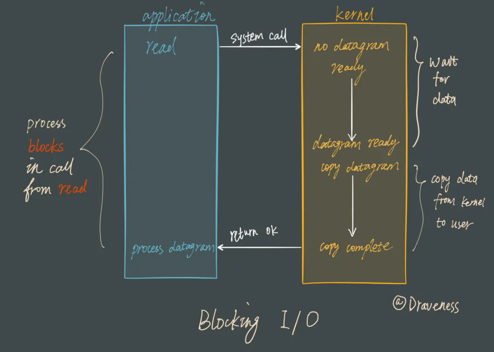
在这种 IO 模型的场景下，我们是给每一个客户端连接创建一个线程去处理它。不管这个客户端建立了连接有没有在做事（发送读取数据之类），都要去维护这个连接，直到连接断开为止。创建过多的线程就会消耗过高的资源，以 Java BIO 为例
- BIO 是一个同步阻塞 IO
- Java 线程的实现取决于底层操作系统的实现在 linux 系统中，一个线程映射到一个轻量级进程（用户态中）然后去调用内核线程执行操作
- 对线程的调度，切换时刻状态的存储等等都要消耗很多 CPU 和缓存资源
- 同步：客户端请求服务端后，服务端开始处理假设处理1秒钟，这一秒钟就算客户端再发送很多请求过来，服务端也忙不过来，它必须等到之前的请求处理完毕后再去处理下一个请求，当然我们可以使用伪异步 IO 来实现，也就是实现一个线程池，客户端请求过来后就丢给线程池处理，那么就能够继续处理下一个请求了
- 阻塞：inputStream.read(data) 会通过 recvfrom 去接收数据，如果内核数据还没有准备好就会一直处于阻塞状态
由此可见阻塞 I/O 难以支持高并发的场景
public static void main(String[] args) throws IOException {
ServerSocket serverSocket = new ServerSocket(9999);
// 新建一个线程用于接收客户端连接
// 伪异步 IO
new Thread(() -> {
while (true) {
System.out.println("开始阻塞, 等待客户端连接");
try {
Socket socket = serverSocket.accept();
// 每一个新来的连接给其创建一个线程去处理
new Thread(() -> {
byte[] data = new byte[1024];
int len = 0;
System.out.println("客户端连接成功，阻塞等待客户端传入数据");
try {
InputStream inputStream = socket.getInputStream();
// 阻塞式获取数据直到客户端断开连接
while ((len = inputStream.read(data)) != -1) {
// 或取到数据
System.out.println(new String(data, 0, len));
// 处理数据
}
} catch (IOException e) {
e.printStackTrace();
}
}).start();
} catch (IOException e) {
e.printStackTrace();
}
}
}).start();
}
如果接受到了一个客户端连接而不采用对应的一个线程去处理的话，首先 serverSocket.accept(); 无法去获取其它连接，其次 inputStream.read() 可以看到获取到数据后需要处理完成后才能处理接收下一份数据，正因如此在阻塞 I/O 模型的场景下我们需要为每一个客户端连接创建一个线程去处理
阻塞模型虽然开发中非常常见也非常易于理解，但是由于它会影响其他 FD 对应的服务，所以在需要处理多个客户端任务的时候，往往都不会使用阻塞模型。
非阻塞IO
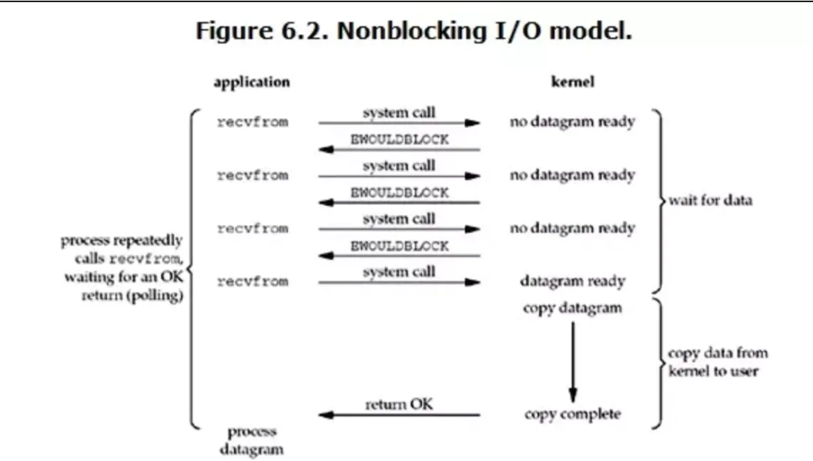
可以看到是通过服务端应用程序不断的轮询内核数据是否准备好，如果数据没有准备好的话，内核就返回一个 BWOULDBLOCK 错误，那么应用程序就继续轮询直到数据准备好了为止，在 Java 中的 NIO(非阻塞I/O, New I/O) 底层是通过多路复用 I/O 模型实现的。而现实的场景也是诸如 netty，redis，nginx，nodejs 都是采用的多路复用 I/O 模型，因为在非阻塞 I/O 这种场景下需要我们不断的去轮询，也是会消耗大量的 CPU 资源的，一般很少采用这种方式。我们这里手写一段伪代码来看下
Socket socket = serverSocket.accept();
// 不断轮询内核，哪个 socket 的数据是否准备好了
while (true) {
data = socket.read();
if (data != BWOULDBLOCK) {
// 表示获取数据成功
doSomething();
}
}
多路复用IO
阻塞式的 I/O 模型并不能满足这里的需求，我们需要一种效率更高的 I/O 模型来支撑 Redis 的多个客户（redis-cli），这里涉及的就是 I/O 多路复用模型了
Java 中的 NIO 就是采用的多路复用机制，他在不同的操作系统有不同的实现，在 windows 上采用的是 select ,在 unix/linux 上是 epoll。而 poll 模型是对 select 稍许升级大致相同。
最先出现的是 select 。后由于 select 的一些痛点比如它在 32 位系统下，单进程支持最多打开 1024 个文件描述符（linux 对 IO 等操作都是通过对应的文件描述符实现的 socket 对应的是 socket 文件描述符），poll 对其进行了一些优化，比如突破了 1024 这个限制，他能打开的文件描述符不受限制（但还是要取决于系统资源），而上述 2 中模型都有一个很大的性能问题导致产生出了 epoll。后面会详细分析
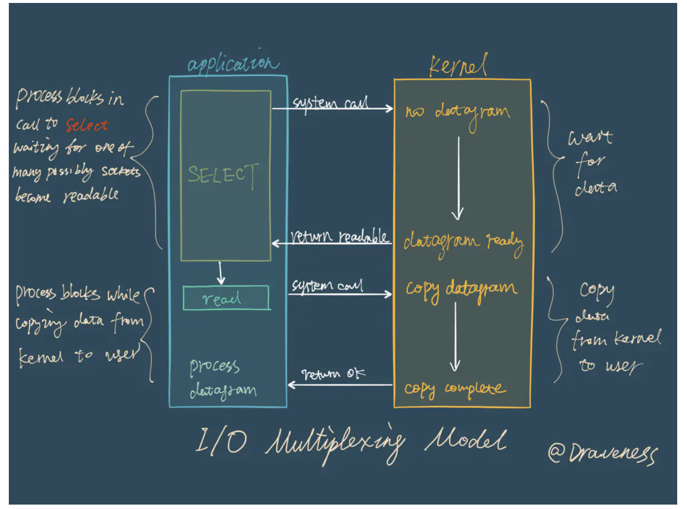
在 I/O 多路复用模型中，最重要的函数调用就是 select，该方法的能够同时监控多个文件描述符的可读可写情况，当其中的某些文件描述符可读或者可写时，select 方法就会返回可读以及可写的文件描述符个数。
关于
select的具体使用方法，在网络上资料很多，这里就不过多展开介绍了；与此同时也有其它的 I/O 多路复用函数
epoll/kqueue/evport，它们相比select性能更优秀，同时也能支撑更多的服务。
Reactor 设计模式
Redis 服务采用 Reactor 的方式来实现文件事件处理器（每一个网络连接其实都对应一个文件描述符）
Redis基于Reactor模式开发了网络事件处理器，这个处理器被称为文件事件处理器。它的组成结构为4部分：多个套接字、IO多路复用程序、文件事件分派器、事件处理器。因为文件事件分派器队列的消费是单线程的，所以Redis才叫单线程模型。
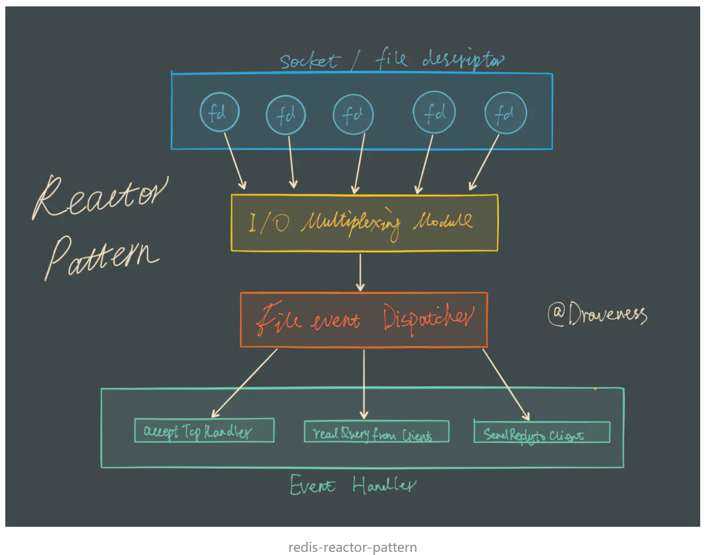
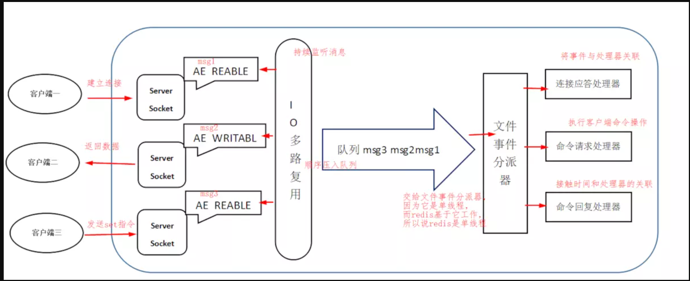
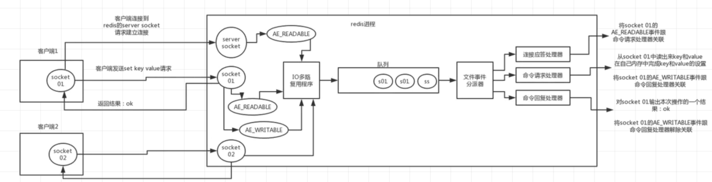
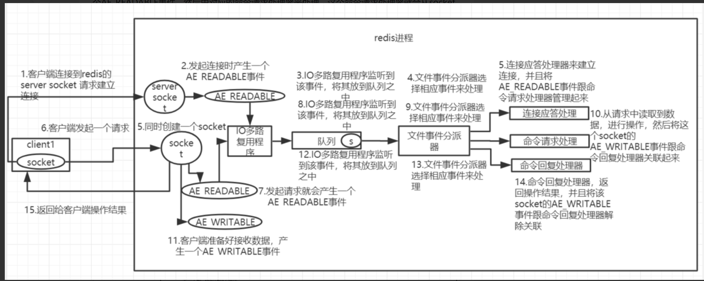
消息处理流程
- 文件事件处理器使用I/O多路复用(multiplexing)程序来同时监听多个套接字，也有叫FD(file Description文件描述符)，并根据套接字目前执行的任务来为套接字关联不同的事件处理器。
- 当被监听的套接字准备好执行连接应答(accept)、读取(read)、写入(write)、关闭(close)等操作时，与操作相对应的文件事件就会产生，这时文件事件处理器就会回调套接字之前关联好的事件处理器来处理这些事件。
尽管多个文件事件可能会并发地出现，但I/O多路复用程序总是会将所有产生事件的套接字都推到一个队列里面，然后通过这个队列，以有序（sequentially）、同步（synchronously）、每次一个套接字的方式向文件事件分派器传送套接字：当上一个套接字产生的事件被处理完毕之后（该套接字为事件所关联的事件处理器执行完毕）， I/O多路复用程序才会继续向文件事件分派器传送下一个套接字。
虽然整个文件事件处理器是在单线程上运行的，但是通过 I/O 多路复用模块的引入，实现了同时对多个 FD(文件描述符) 读写的监控，提高了网络通信模型的性能，同时也可以保证整个 Redis 服务实现的简单
文件事件处理器
Redis基于Reactor模式开发了网络事件处理器，这个处理器叫做文件事件处理器 file event handler。这个文件事件处理器，它是单线程的，所以 Redis 才叫做单线程的模型，它采用IO多路复用机制来同时监听多个Socket，根据Socket上的事件类型来选择对应的事件处理器来处理这个事件。
如果被监听的 Socket 准备好执行accept、read、write、close等操作的时候，跟操作对应的文件事件就会产生，这个时候文件事件处理器就会调用之前关联好的事件处理器来处理这个事件。
文件事件处理器是单线程模式运行的，但是通过IO多路复用机制监听多个Socket，可以实现高性能的网络通信模型，又可以跟内部其他单线程的模块进行对接，保证了 Redis 内部的线程模型的简单性。
文件事件处理器的结构包含4个部分：多个Socket、IO多路复用程序、文件事件分派器以及事件处理器（命令请求处理器、命令回复处理器、连接应答处理器等）。
多个 Socket 可能并发的产生不同的操作，每个操作对应不同的文件事件，但是IO多路复用程序会监听多个 Socket，会将 Socket 放入一个队列中排队，每次从队列中取出一个 Socket 给事件分派器，事件分派器把 Socket 给对应的事件处理器。
然后一个 Socket 的事件处理完之后，IO多路复用程序才会将队列中的下一个 Socket 给事件分派器。文件事件分派器会根据每个 Socket 当前产生的事件，来选择对应的事件处理器来处理。
文件事件
当 Socket 变得可读时（比如客户端对redis执行write操作，或者close操作），或者有新的可以应答的 Socket 出现时（客户端对redis执行connect操作），Socket就会产生一个AE_READABLE事件。
当 Socket 变得可写的时候（客户端对redis执行read操作），Socket 会产生一个AE_WRITABLE事件。
IO 多路复用程序可以同时监听 AE_REABLE 和 AE_WRITABLE 两种事件，如果一个Socket同时产生了这两种事件，那么文件事件分派器优先处理 AE_READABLE 事件，然后才是 AE_WRITABLE 事件。
文件事件处理器
如果是客户端要连接redis，那么会为 Socket 关联连接应答处理器。
如果是客户端要写数据到redis，那么会为 Socket 关联命令请求处理器。
如果是客户端要从redis读数据，那么会为 Socket 关联命令回复处理器。
客户端与redis通信的一次流程
在 Redis 启动初始化的时候，Redis 会将连接应答处理器跟 AE_READABLE 事件关联起来，接着如果一个客户端跟Redis发起连接，此时会产生一个 AE_READABLE 事件，然后由连接应答处理器来处理跟客户端建立连接，创建客户端对应的 Socket，同时将这个 Socket 的 AE_READABLE 事件跟命令请求处理器关联起来。
当客户端向Redis发起请求的时候（不管是读请求还是写请求，都一样），首先就会在 Socket 产生一个 AE_READABLE 事件，然后由对应的命令请求处理器来处理。这个命令请求处理器就会从Socket中读取请求相关数据，然后进行执行和处理。
接着Redis这边准备好了给客户端的响应数据之后，就会将Socket的AE_WRITABLE事件跟命令回复处理器关联起来，当客户端这边准备好读取响应数据时，就会在 Socket 上产生一个 AE_WRITABLE 事件，会由对应的命令回复处理器来处理，就是将准备好的响应数据写入 Socket，供客户端来读取。
命令回复处理器写完之后，就会删除这个 Socket 的 AE_WRITABLE 事件和命令回复处理器的关联关系。
多路复用模块
I/O 多路复用模块封装了底层的 select、epoll、avport 以及 kqueue 这些 I/O 多路复用函数，为上层提供了相同的接口。
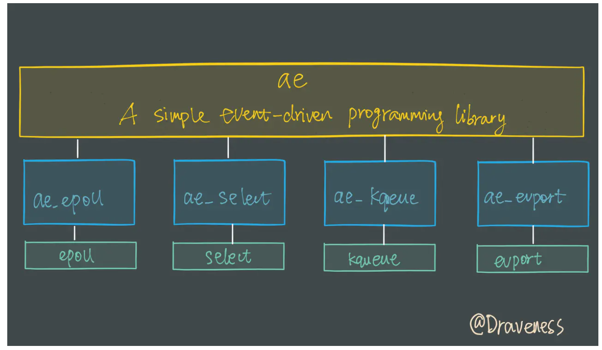
整个 I/O 多路复用模块抹平了不同平台上 I/O 多路复用函数的差异性，提供了相同的接口
子模块的选择
因为 Redis 需要在多个平台上运行，同时为了最大化执行的效率与性能，所以会根据编译平台的不同选择不同的 I/O 多路复用函数作为子模块，提供给上层统一的接口；在 Redis 中，我们通过宏定义的使用，合理的选择不同的子模块：
ifdef HAVE_EVPORT
include "ae_evport.c"
else
ifdef HAVE_EPOLL
include "ae_epoll.c"
else
ifdef HAVE_KQUEUE
include "ae_kqueue.c"
elsec
include "ae_select.c"
endif
endif
因为 select 函数是作为 POSIX 标准中的系统调用，在不同版本的操作系统上都会实现，所以将其作为保底方案：
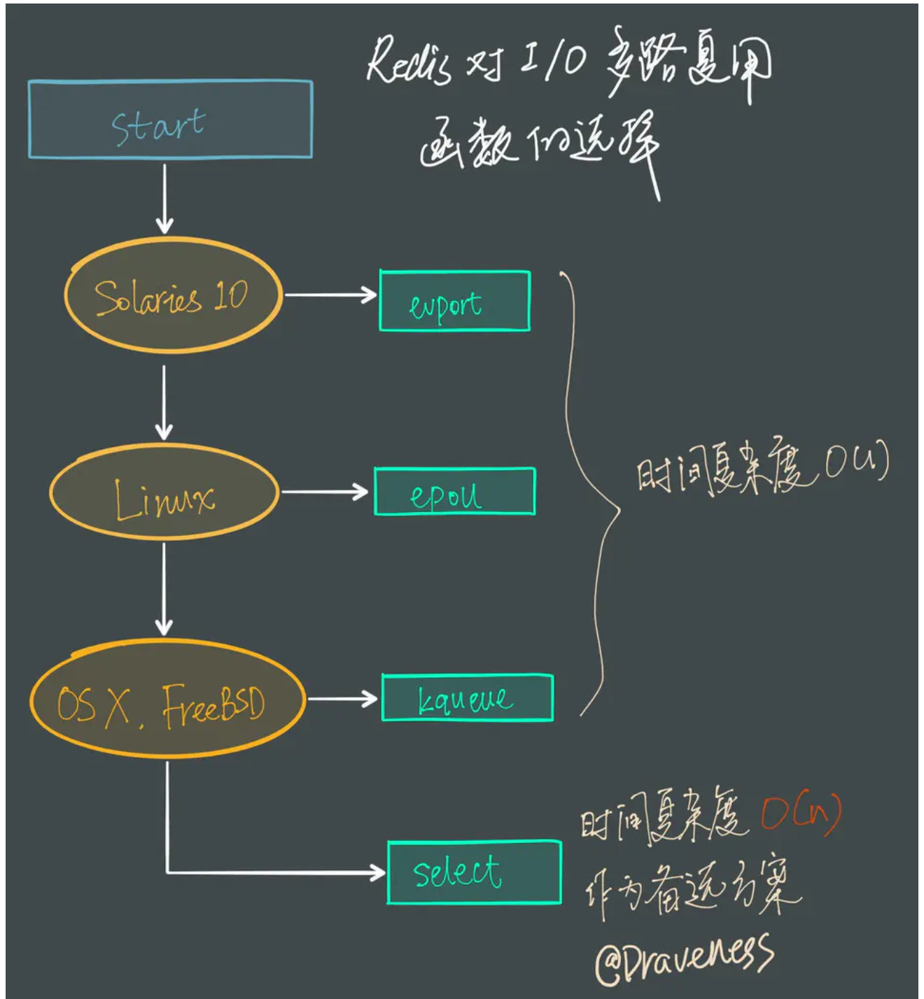
Redis 会优先选择时间复杂度为 $O(1)$ 的 I/O 多路复用函数作为底层实现，包括 Solaries 10 中的 evport、Linux 中的 epoll 和 macOS/FreeBSD 中的 kqueue，上述的这些函数都使用了内核内部的结构，并且能够服务几十万的文件描述符。
但是如果当前编译环境没有上述函数，就会选择 select 作为备选方案，由于其在使用时会扫描全部监听的描述符，所以其时间复杂度较差 $O(n)$，并且只能同时服务 1024 个文件描述符，所以一般并不会以 select 作为第一方案使用。
动图理解
通常的一次的请求结果如下图所示：
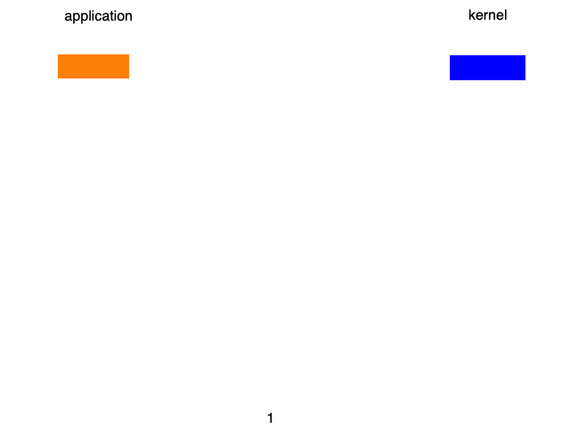
但是，服务器往往不会只处理一次请求，往往是多个请求，这一个请求，这时候每来一个请求，就会生成一个进程或线程。
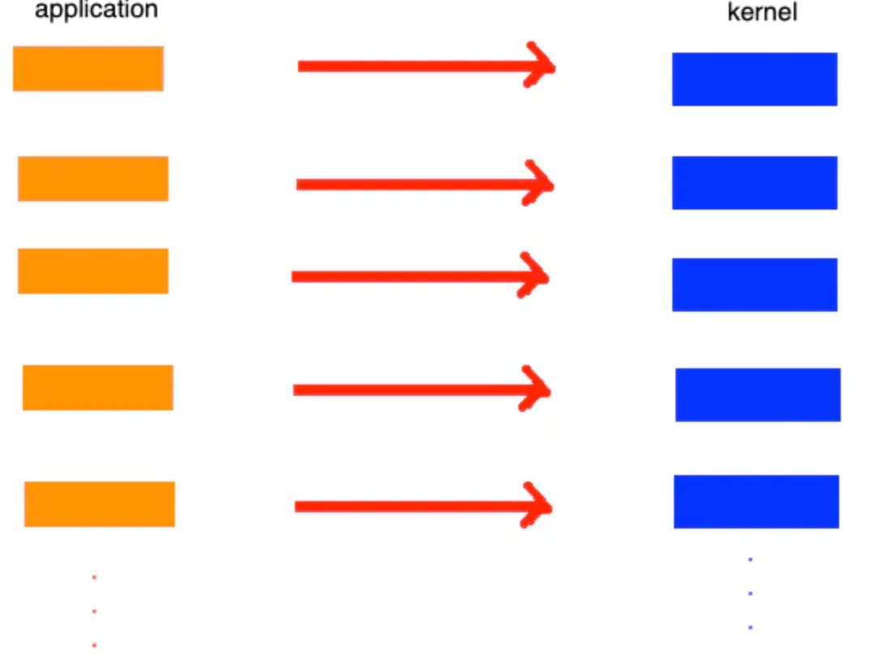
在这些请求线程或者进程中，大部分都处于等待阶段，只有少部分是接收数据。这样一来，非常耗费资源，而且这些线程或者进程的管理，也是个事儿。
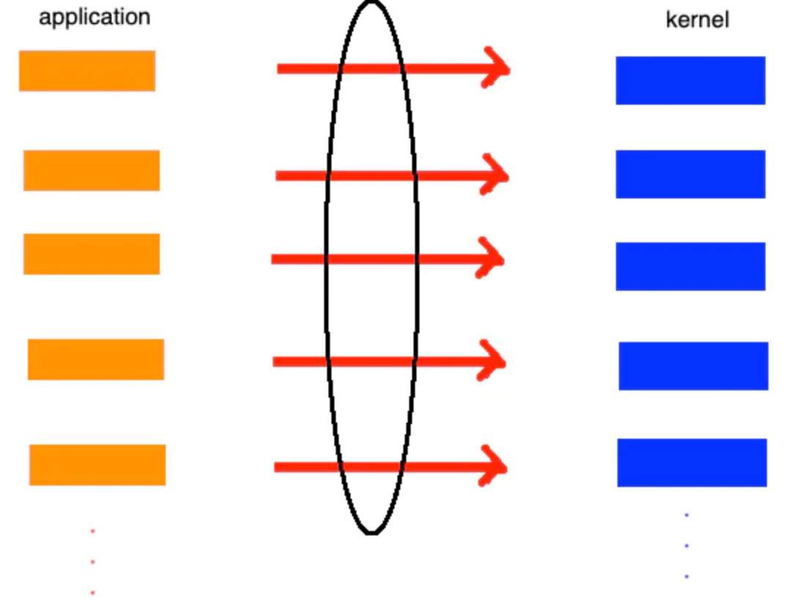
于是，有人想到一个办法：我们只用一个线程或者进程来和系统内核打交道，并想办法把每个应用的I/O流状态记录下来，一有响应变及时返回给相应的应用。
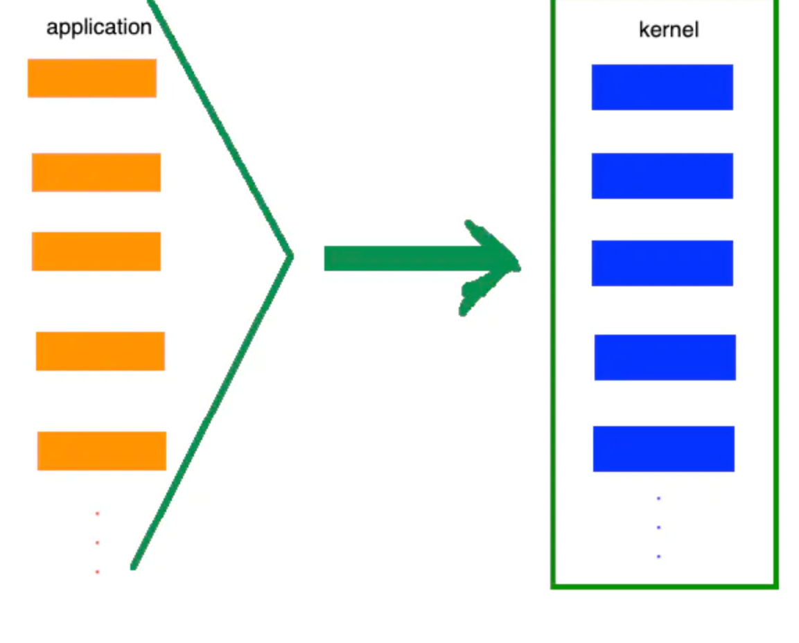
或者下图：
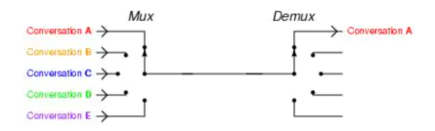
select、poll、epoll
select, poll, epoll 都是I/O多路复用的具体实现，他们出现是有先后顺序的。
select是第一个实现 (1983 左右在BSD里面实现的)。
select 被实现后，发现诸多问题，然后1997年实现了poll，对select进行了改进，select和poll是很类似的。
再后来，2002做出重大改进实现了epoll。
epoll和 select/poll 有着很大的不同：
例如：select/poll的处理流程如下：
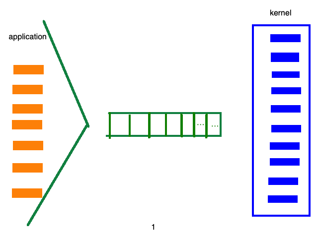
而epoll的处理流程如下：
这样，就无需遍历成千上万个消息列表了，直接可以定位哪个socket有数据。
那么，这是如何实现的呢？
早期的时候 epoll的实现是一个哈希表，但是后来由于占用空间比较大，改为了红黑树和链表
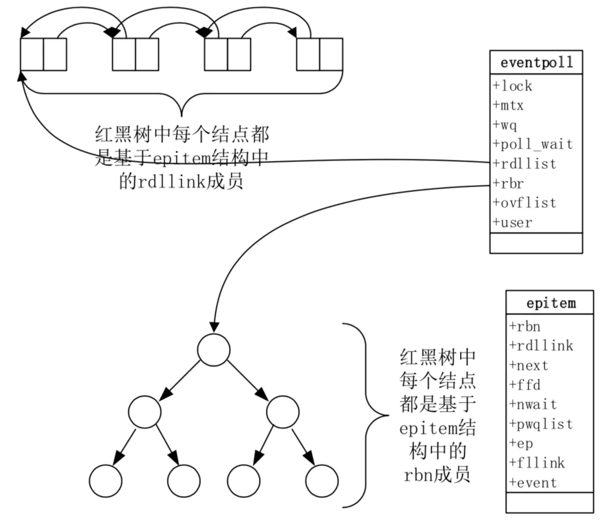
其中链表中全部为活跃的链接，红黑树中放的是所有事件。两部分各司其职。 这样一来，当收到内核的数据时，只需遍历链表中的数据就行了，而注册read事件或者write事件的时候，向红黑树中记录。
结果导致：
- 创建\修改\删除消息效率非常高：O(logN)。
- 获取活跃链接也非常快，因为在一个时间内，大部分是不活跃的链接，活跃的链接是少数，只需要遍历少数活跃的链接就好了
select：将之前传入的fd_set拷贝传出到用户态并返回就绪的文件描述符总数。用户态并不知道是哪些文件描述符处于就绪态，需要遍历来判断。
epoll：epoll_wait只用观察就绪链表中有无数据即可，最后将链表的数据返回给数组并返回就绪的数量。内核将就绪的文件描述符放在传入的数组中，所以只用遍历依次处理即可。这里返回的文件描述符是通过mmap让内核和用户空间共享同一块内存实现传递的，减少了不必要的拷贝。
为啥Redis单线程模型也能效率这么高？
1）纯内存操作
Redis 将所有数据放在内存中，内存的响应时长大约为 100 纳秒，这是 redis 的 QPS 过万的重要基础。
2）核心是基于非阻塞的IO多路复用机制
有了非阻塞 IO 意味着线程在读写 IO 时可以不必再阻塞了，读写可以瞬间完成然后线程可以继续干别的事了。
redis 需要处理多个 IO 请求，同时把每个请求的结果返回给客户端。由于 redis 是单线程模型，同一时间只能处理一个 IO 事件，于是 redis 需要在合适的时间暂停对某个 IO 事件的处理，转而去处理另一个 IO 事件，这就需要用到IO多路复用技术了， 就好比一个管理者，能够管理个socket的IO事件，当选择了哪个socket，就处理哪个socket上的 IO 事件，其他 IO 事件就暂停处理了。
3）单线程反而避免了多线程的频繁上下文切换带来的性能问题。（百度多线程上下文切换）
第一，单线程可以简化数据结构和算法的实现。并发数据结构实现不但困难而且开发测试比较麻
第二，单线程避免了线程切换和竞态产生的消耗，对于服务端开发来说，锁和线程切换通常是性能杀手。
单线程的问题：对于每个命令的执行时间是有要求的。如果某个命令执行过长，会造成其他命令的阻塞，所以 redis 适用于那些需要快速执行的场景。
参考：
Select-Man-Pages
Reactor-Pattern
epoll vs kqueue
https://draveness.me/redis-io-multiplexing/
https://juejin.im/post/583d11bd128fe1006bf0ec0f
https://juejin.im/post/5dabdb1ee51d45216d7b166a
https://juejin.im/post/5e5dcab26fb9a07ce271f6ec
https://juejin.im/post/5dc83f22f265da4cf677c461?utm_source=gold_browser_extension
https://mp.weixin.qq.com/s/FRg_lSHDiZofzTZApU6z9Q
This blog is under a CC BY-NC-SA 3.0 Unported License
本文链接：http://hogwartsrico.github.io/2020/06/24/Redis-and-Multiplexing/